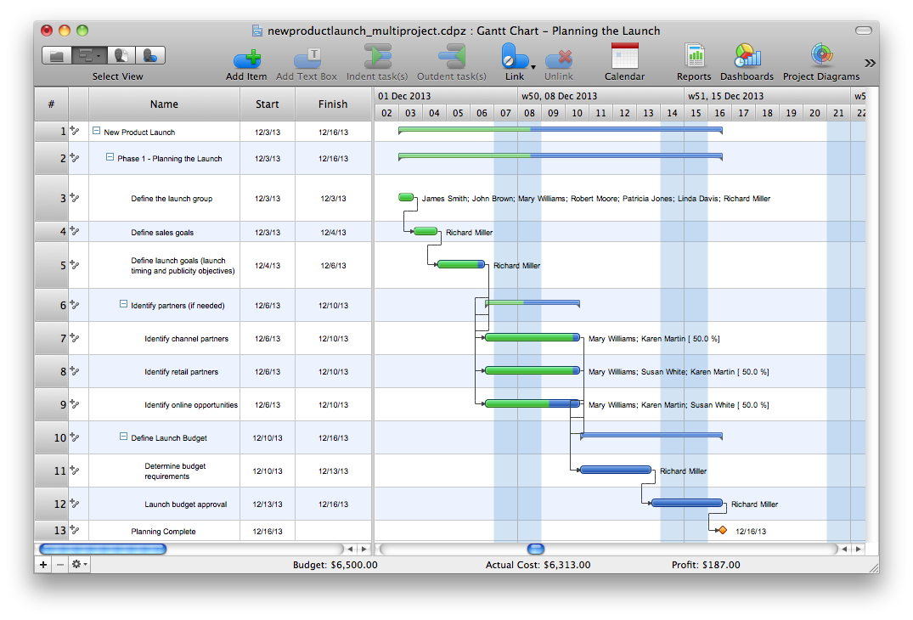
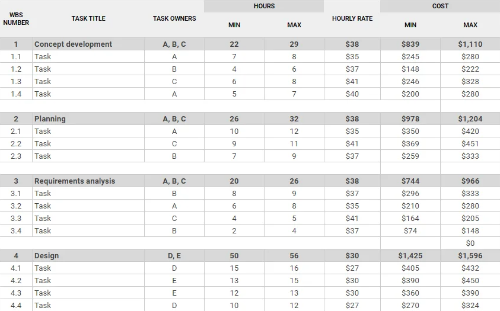

ESP - Task 1: Planning A Project
What Is It?
Task 1 is all about planning a project.
In the task, you will be a project manager for a software development company and you will be given a brief that you will use
to create the following:
- a Gantt chart to manage the timeline of the project,
- a Resource & Cost Plan to demonstrate all costs,
- and a Rationale explaining your choices.
- Project requirements,
- Deadlines,
- Tasks
And the expected time the task will take - Employee Information,
- Budget Constraints,
- Other relevant costs,
(e.g: software licenses, hardware costs, staff training costs, etc.) - And any other relevant information.
Gantt Charts
A Gantt chart is a type of chart that illustrates a project schedule. It shows the start and finish dates of the various elements of a project.
Gantt charts are useful for planning and scheduling projects, as they provide a visual representation of the timeline and help to identify many things
Such as:
- Task Duration,
- Task Dependencies,
- and Resource allocation.
(Resource is another term for Employee)

key features:
- Tasks are listed on the left,
- Time is represented on the top,
- Start and End Date are also clearly displayed
- Bars represent the duration of each task,
- Dependencies between tasks are shown with black lines w/ arrows,
- Resources/ Employees responsible for a task are labelled next to it
Resource & Cost Plan
A Resource & Cost Plan is a document that outlines the resources required for a project and the associated costs.
It typically includes:
- Human Resources: The employees needed for the project, including their roles and responsibilities.
- Material Resources: The physical items required for the project, such as equipment, software, and supplies.
- Financial Resources: The budget allocated for the project, including costs for human and material resources.

key features:
- Tasks are clearly broken up
- Each task has a Resource allocated to it, along side their hourly rate
- The total hours and cost for each task is clearly displayed
Rationale
A Rationale is a document that explains the reasoning behind the decisions made in a project.
It typically includes decisions such as:
- Why did you choose a certain employee to do a task?
e.g: why did you choose employee A to do Task 1 rather than employee B? - Why did you allocate a certain amount of time to a task?
e.g: why did you allocate 4 hours to Task 2 instead of 5 hours? - Why did you choose to use a certain piece of software or hardware?
e.g: why did you choose to use a cloud server over a physical one? - Why did you choose to do tasks in a certain order?
e.g: why did you choose to do Task 7 before Task 4?
Marks?
Task 1 is worth 19 marks.
This is split into 3 sections:
- Gantt Chart - 6 Marks
- Resource & Cost Plan - 4 Marks
- Rationale - 9 Marks
Time?
You will have 3 Hours to complete this task.
Tips
Here are some tips to help you with this task:
- Do Not Neglect The Rationale.
- It is worth the most marks in the Task and you (almost certainly) will not have enough time to fully complete everything.
- Make sure to read the task brief carefully and ensure you understand the requirements before begining anything else.
- Spend time getting familiar with tools used to create Gantt charts and Resource & Cost Plans before the exam.
e.g: Ganttproject, Microsoft Project, Excel Spreadsheets etc. - Be clear in your Rationale, take time to Fully explain why you made certain decisions.
- Do the tasks simultaneously, Do Not do the cost plan then the gantt chart then the rationale.
You Will Not Finish In Time. - Check your work several times for accuracy and completeness before submitting.